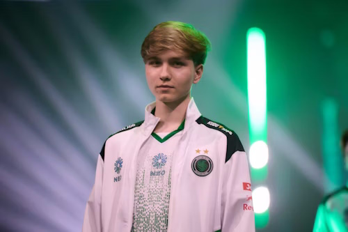

m0NESY

m0NESY — российский профессиональный игрок в Counter-Strike 2. Его настоящее имя — Илья Осипов. Он известен как один из самых ярких молодых снайперов в CS2.
Сейчас m0NESY выступает за Team Falcons. На сайте он представлен как игрок, который прославился быстрыми реакциями и сильной игрой с AWP.